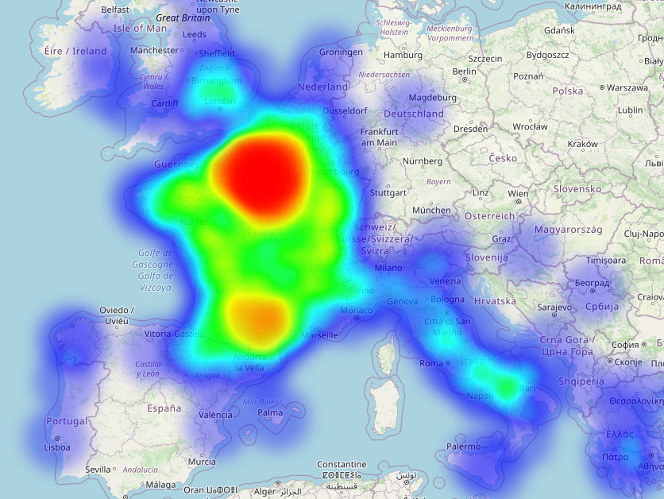

Cette carte a été générée à partir de l'index du Tome II de l'inventaire des registres du Trésor des Chartes. Après un alignement automatisée avec des référentiels en ligne (Geonames, DicoTopo et Wikidata), elle permet de visualiser l'ensemble des lieux mentionnés par ces registres et disposant d'un lien direct ou indirect avec l'action du roi de France entre 1303 et 1314.
La méthodologie utilisée est disponible ici (billet de blog en cours d'écriture) et toutes les données mises en lignes seront bientôt accessible ici.
Pour des raisons de lisibilité, l'entrée "Paris" a été éliminée de cette visualisation.
